About the game
Pushlings is a cozy logic puzzle game about pushing crates and bending the rules. Every pad on the board holds a rule, and a crate pushed onto it switches that rule on: water turns into bridges, walls crumble into floor, goals appear. Players reshape each level to find their way to the goal.
There are more than 500 puzzles across 10 voxel worlds, from Meadow to Neon Circuit, each one checked by a solver to make sure it can be solved. Reaching the goal in par earns three stars, optional bits reward a closer look, and a new puzzle arrives every day.
Players collect 28 characters, the Pushlings, with stars, bits and daily streaks. Everything plays offline, with unlimited undo, one-tap restart and hints, and no timers or energy.
Features
- Rule pads: push a crate onto a pad to switch its rule on, such as WATER → BRIDGE or WALL → FLOOR
- 500+ puzzles, every one checked by a solver to be solvable
- 10 worlds: Meadow, Sakura Garden, Coral Lagoon, Autumn Grove, Jungle Ruins, Snowy Peaks, Crystal Caverns, Desert Oasis, Ember Isle and Neon Circuit
- 28 Pushlings to collect, from Shiba to Byte the code cube
- A daily puzzle with streaks, par stars and optional bits
- Game Center and Google Play Games achievements and leaderboards, with progress saved to iCloud or Play Games
- Fully offline; unlimited undo, restart and hints; no timers or energy
- Accessibility: follows the phone's Reduce Motion setting, a left-handed layout, swipe or on-screen arrows
Trailer
Pushlings trailer, 21 seconds, 1920 × 1080, captured from the game with its own music.
Key art

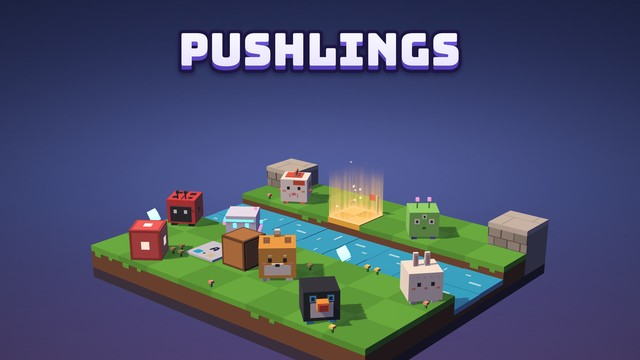

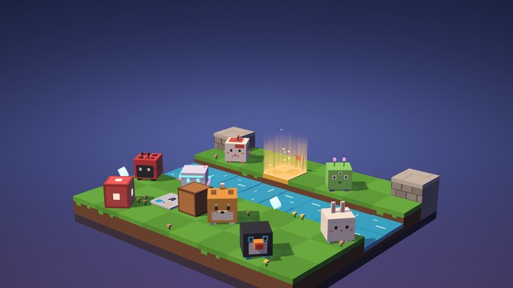


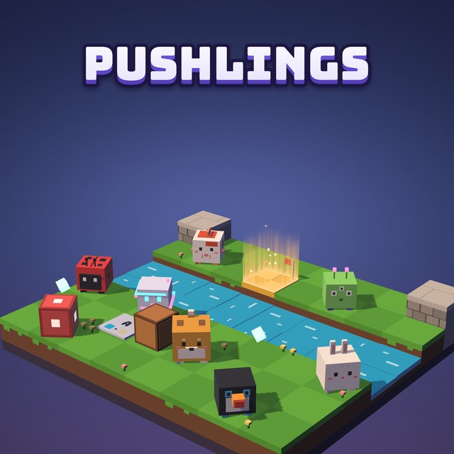

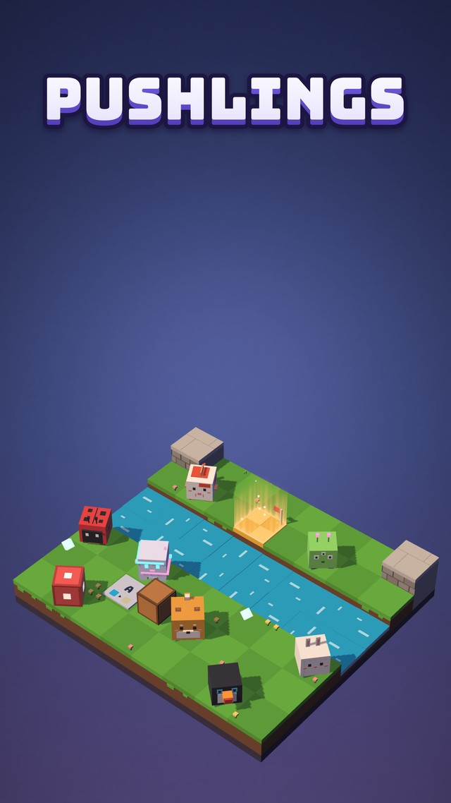
Gameplay

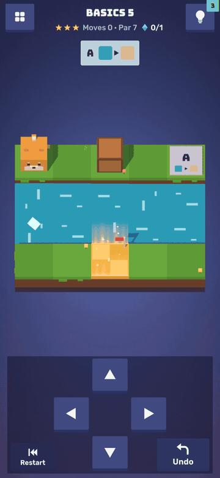

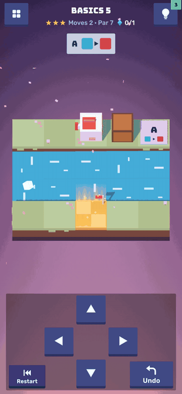

Screenshots

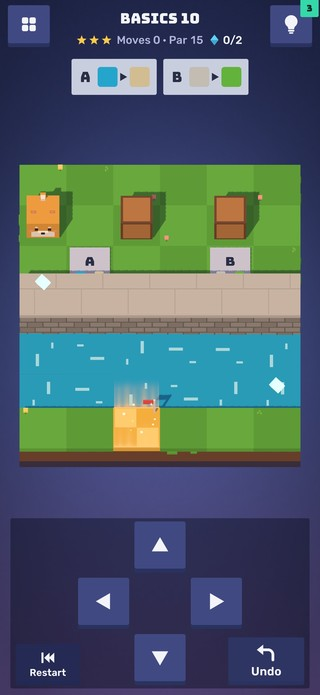

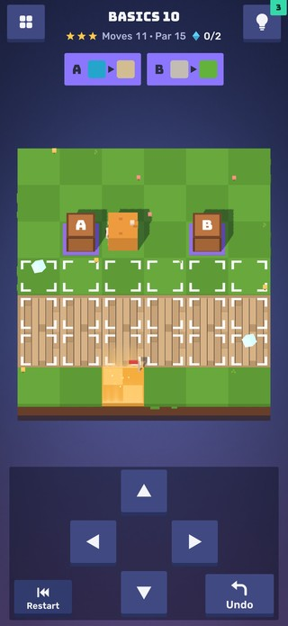

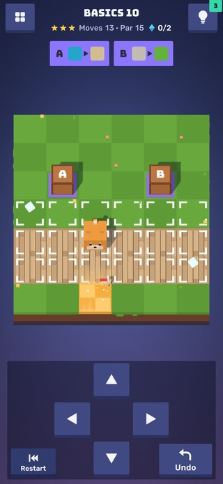

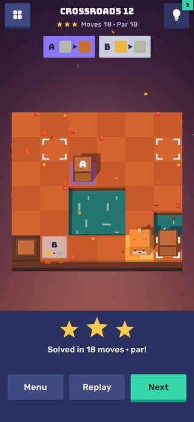

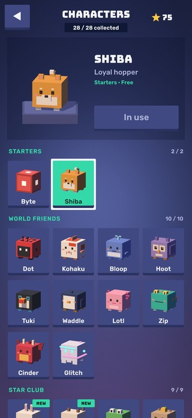

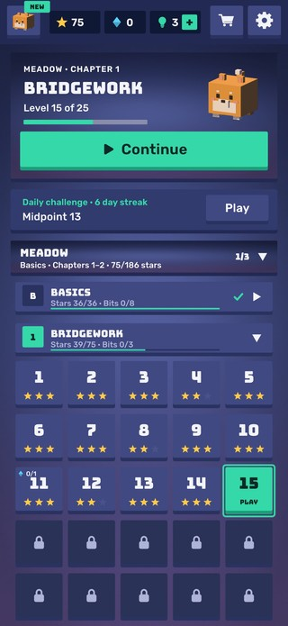

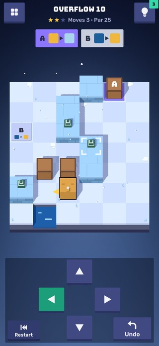
The 10 worlds

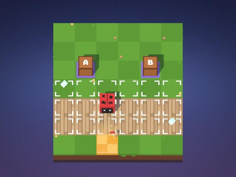

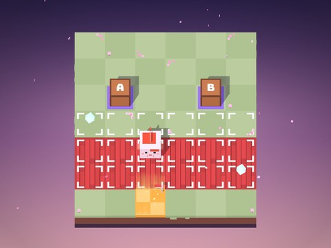

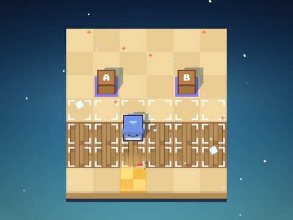

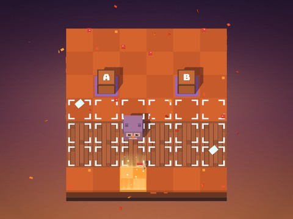

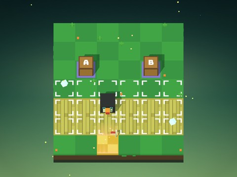

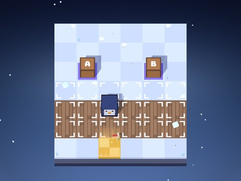

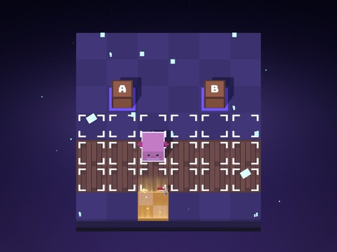

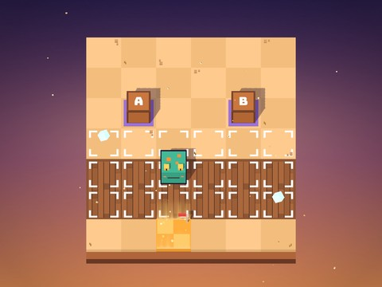

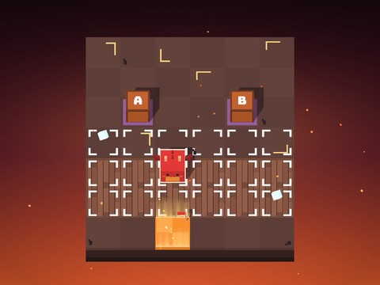

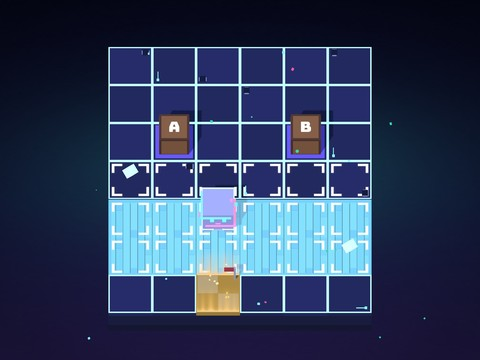
Logo and icon


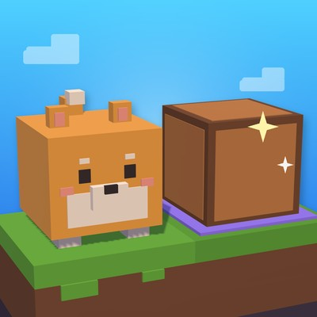
About Technic Games
Pushlings is made by Technic Games, an independent game developer. For press questions, review codes or interviews, write to support@technicgames.com.
All images, videos and logos on this page may be used in coverage of Pushlings. Every image is captured from the game itself.